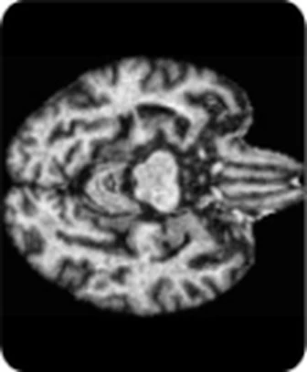
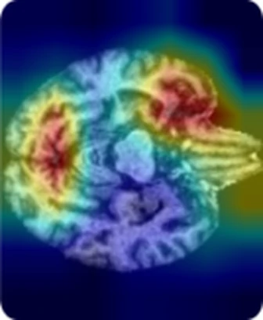
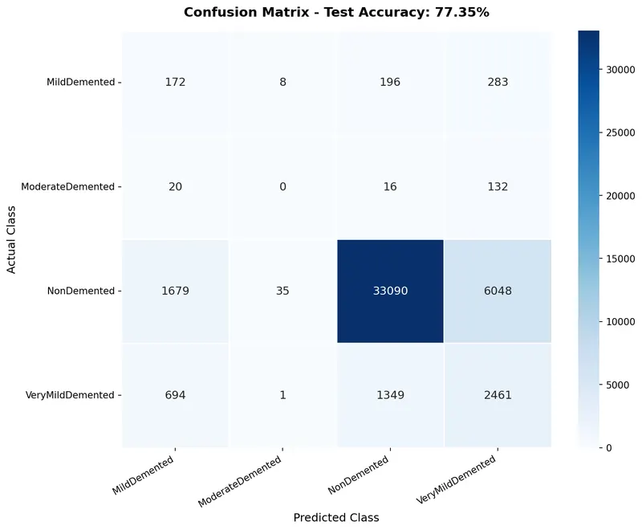
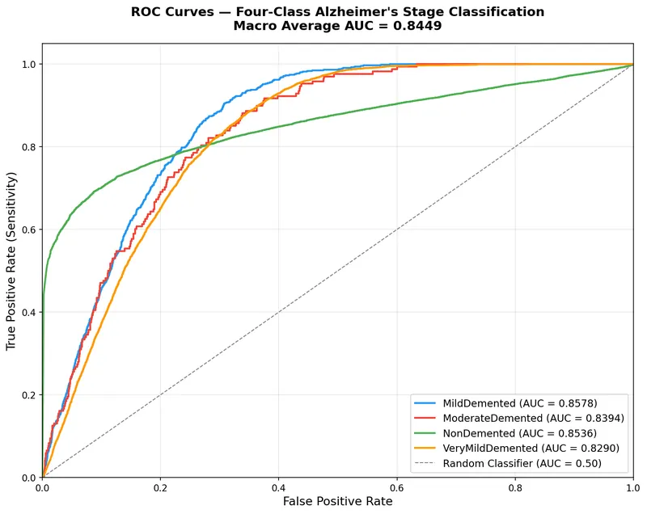
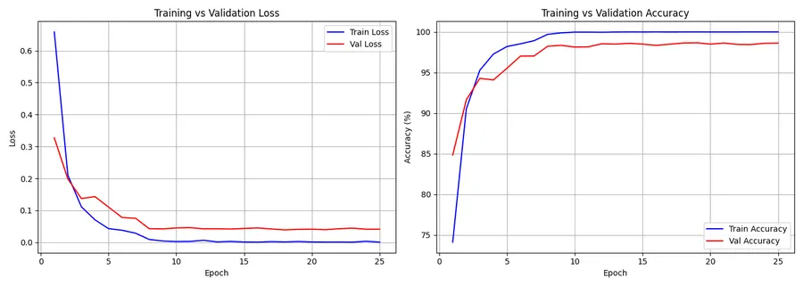
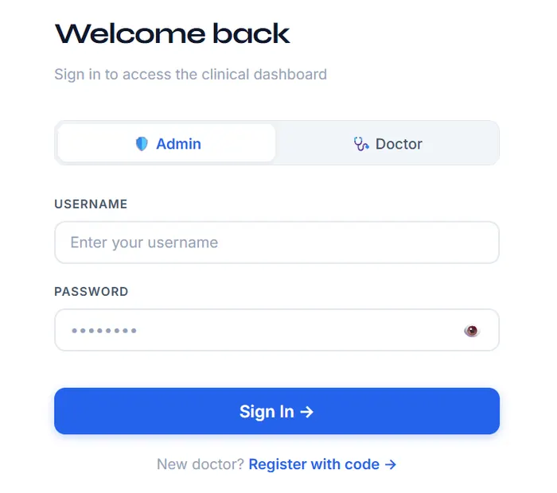

NeuroScan AI
Can a doctor see why a model flags early Alzheimer's? I built a classifier for four Alzheimer's stages, Grad-CAM heatmaps that show the regions behind each prediction, and a hospital web app around them (Admin and Doctor roles, JWT login, patient records, MRI upload, audit trail).
98.66% validation accuracy
77.35% held-out test accuracy
The test set is heavily skewed (88.5% NonDemented), so I treat the gap as a warning about the split, not a verdict on the idea.
Research prototype. Not clinically validated and not a medical device.
Technical details
- Data
- OASIS Alzheimer's MRI (Kaggle), 44,355 training images (80/20 split), separate test set of 46,184.
- Model
- EfficientNet-B0 with transfer learning (timm), 4,012,672 parameters fine-tuned, 224×224 input.
- Training
- Class-weighted cross-entropy, light augmentation, Adam 1e-4, batch 32, 25 epochs, about 119 hours on a laptop with no GPU (training, not inference).
- Grad-CAM
- For Mild and Moderate cases the heatmaps concentrated around the hippocampus, medial temporal lobe and ventricles, consistent with known Alzheimer's regions but not clinically validated.
- Next steps
- Stratified splitting, GPU training, local Nigerian hospital data, clinical validation, longitudinal tracking, a lightweight offline or mobile version.
- Full stack
- Python, PyTorch, timm, torchvision, OpenCV, scikit-learn, NumPy, Pandas, Matplotlib, Seaborn, Flask, Flask-JWT-Extended, Flask-SQLAlchemy, SQLite, HTML/CSS/JavaScript.
Model evaluation






Web app

